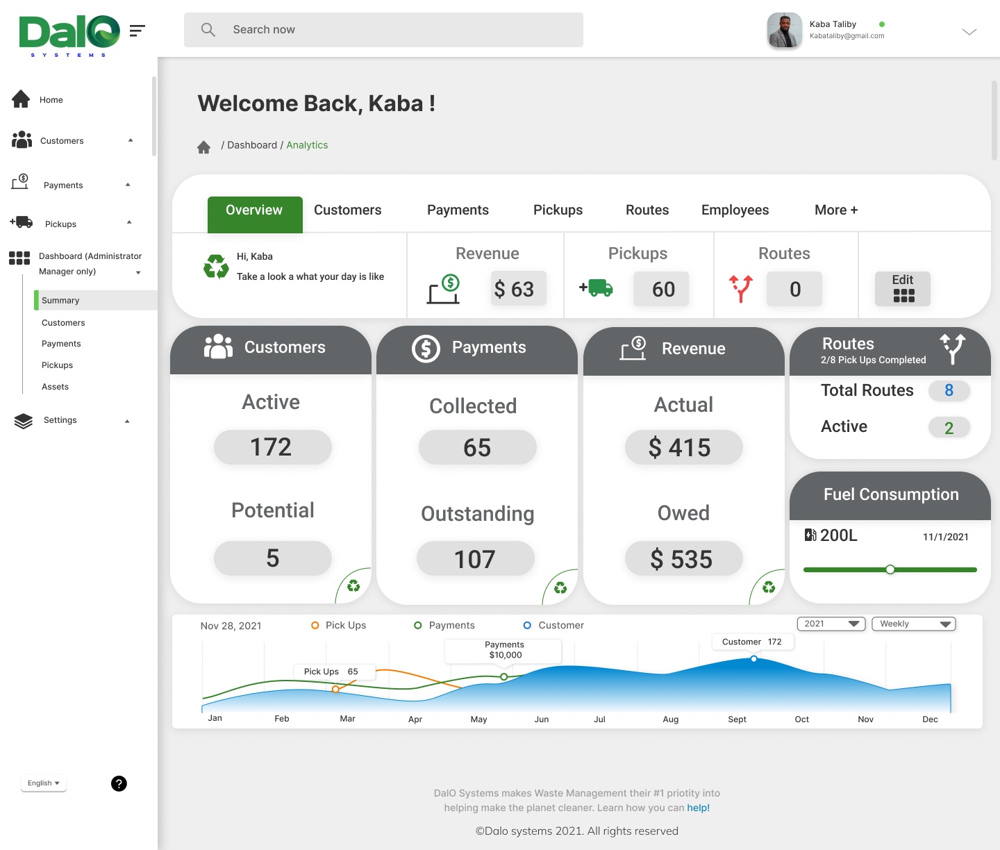
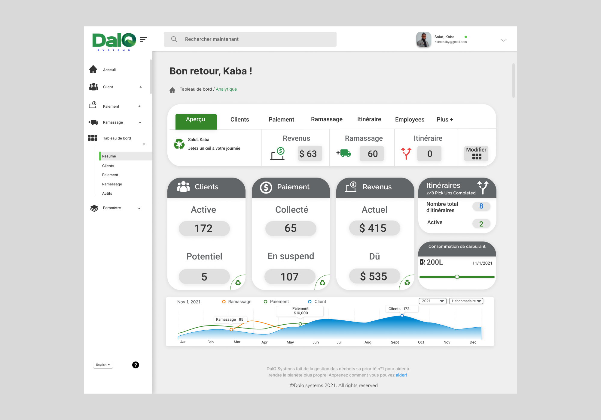

Waste Management Company based in Africa
Waste Management Software
Introducing DalO Systems : DalO Systems is a Waste Management Company with a primary goal to help keep New Guinea clean.
Objective : The purpose was to redesign the system from the ground up. By incorporating new trends, and redesigns of main pages.
Challenge : I have never designed a software from the ground up before that included, icongraphy, typography, listviews, data analytics and more. After talking to experts, doing research and finding example trends I was able to create a user friendly software.
Solution : Designed a user friendly software which inculdued mainly data analtic dashboards and List views. The Pages were updated and created with google material design system in mind. The reason was since majority of users in New guinea Africa mainly use andriods it was logical to provide a design users are used it.

Throughout my academic journey, I embarked on an internship that eventually transitioned into a contract role at DalO Systems, a Waste Management Company in West Africa. The company sought to revamp and modernize their software, which lacked visual appeal and usability. My role, as a User Experience and Interface Designer, involved injecting innovation and simplicity into the system. I focused on creating list views and data analytic dashboards to empower businesses in monitoring their progress. I translated research insights and numerical data into visually captivating designs, developing user-friendly dashboards accessible to companies in diverse regions. It was a tremendous honor to contribute to such a impactful software that facilitated learning and prosperity!
The Dashboards and List Views I designed provided users with access to important data such as revenue, customers, payments, finances, and routes. With my expertise in coding, I can work closely with developers, designers, and CEOs to create valuable software for the company. For design purposes, I utilize Figma, Dribble, and personal conections to create high-fidelity wireframes and prototypes to showcase live designs. It’s crucial for users to have access to this information to see the positive and negative growth of the company. I’m grateful for the opportunity to design this software, as it has allowed me to understand and visualize the data more effectively. I have all the dashboards, list views another designs in my Figma, so if you wanted to check it out I would be honored to showcase it to you.
Given that DalO Systems is situated in Cankry, Guinea, a significant portion of our user base communicated in Spanish. Consequently, when the dashboard was completed and ready for submission to the developer, it necessitated translation into Spanish. This step was crucial for gaining a comprehensive view of the interface before integrating it into a sprint.
Here is a snapshot of the wireframe I designed for the DalO Systems dashboard, which was subsequently translated into Spanish.

This experience was truly remarkable, and I am deeply grateful to my colleagues, the owners, and all my team members for being exceptional. Their support played a pivotal role in my learning journey, providing valuable insights into user experience, user interface design, and development. Working closely with designers, developers, and product managers allowed me to appreciate diverse perspectives. Even after my contract concluded, DalO Systems continued the incorporation of these dashboards. In summary, I can't express enough gratitude for the opportunities and friendships they have enriched me with.